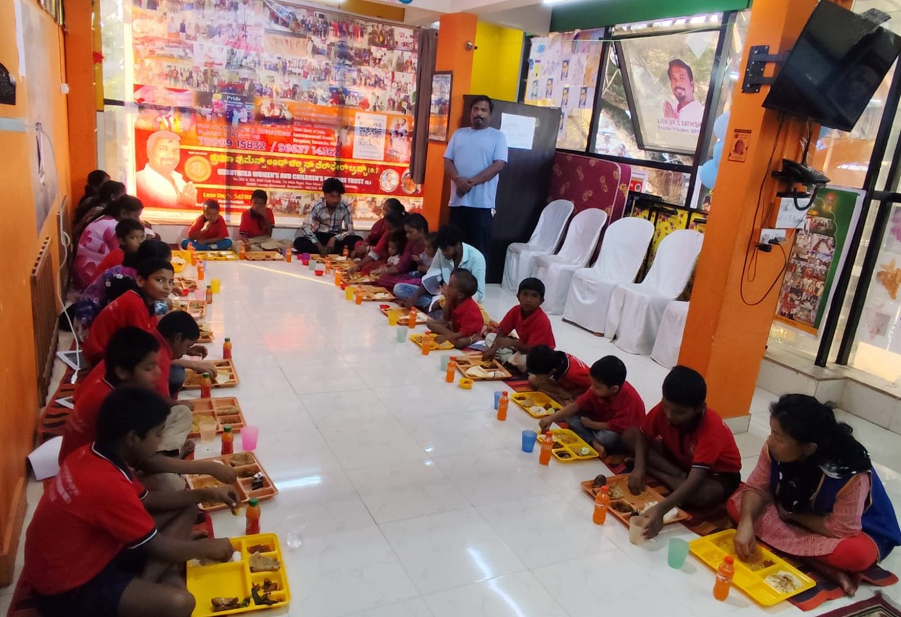
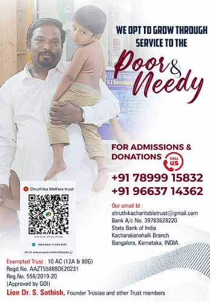

Volunteer Your Time
Spend a day with the children, lend a hand at a camp, or offer a professional skill — teaching, medical, legal or administrative. Regular or one-off, both are useful.
Get in touchMake a Donation — and help keep food, shelter, clothing, education and moral support reaching the children in the trust's care.
The trust shelters and supports approximately 25 children — providing food and shelter, clothing, education and protection, and the moral support that helps them secure employment and establish stable futures.
That work is carried by ordinary, everyday kindness. Lion Dr. S. Sathish established Shruthika Enterprises to help fund the trust, and gifts from well-wishers support the same everyday needs — food and shelter, clothing, education, protection and moral support.
Give once, or give whenever you are able. If you would rather give ration, clothing or books instead of money, that helps just as much — write to us and we will tell you what is needed.

To provide food, shelter, education, and moral support to children, helping them find the path to a settled and respectful future.
If you would like the trust to know who a gift is from, add your name as the transfer reference and let us know once you have given.
Scan with your banking or payments app. The website does not take payments — your app does, and the money reaches the trust directly.

Trouble scanning? The bank details above work just as well, or call +91 78999 15832.
These figures are suggestions only — a starting point, nothing more. Every amount is welcome, and each one goes towards the same everyday needs described above.
This box is a note to yourself — nothing is charged here.
Money is only one kind of generosity. If any of these sound like you, write to us or call — we would be glad to talk it through.
Spend a day with the children, lend a hand at a camp, or offer a professional skill — teaching, medical, legal or administrative. Regular or one-off, both are useful.
Get in touchStand behind one child's schooling for a term or a year. Tell us what you would like to support and we will explain exactly where it is needed.
Get in touchRation, clothing, books, stationery and other essentials are always welcome. Do write or call first, so what you send is what we actually need that month.
Get in touchBring your company alongside a camp, a placement drive or a community event. We are happy to shape something that suits your team and our children.
Get in touchThe trust holds free health camps, eye camps and blood donation drives. Help us run them, or come along with your medical team.
Get in touchThe trust arranges free community mass marriages for underprivileged families with the help of Lions Club, Bengaluru. You can sponsor one, or help us organise it.
Get in touchCall or write with any question about giving.